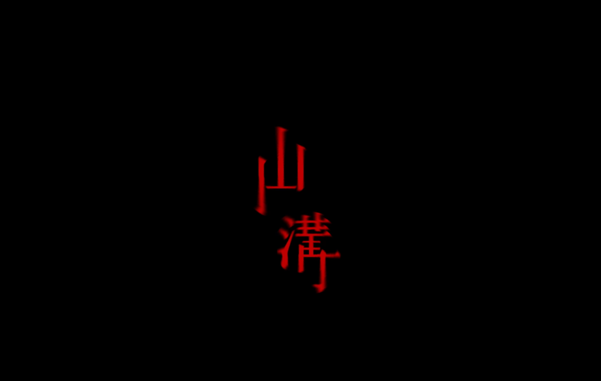
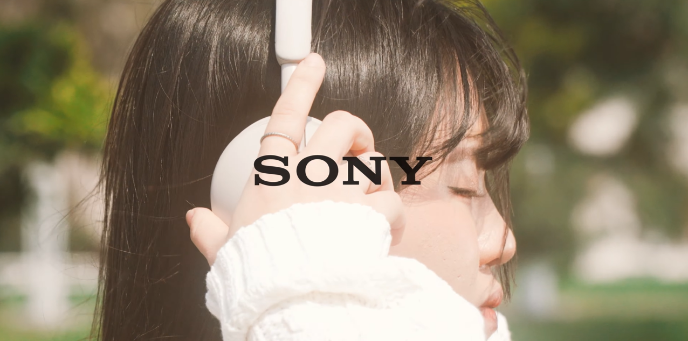

Work

移面之詞主視覺

第17屆瘋影展海報

中正傳播營海報

中正之聲2024主視覺

劇情片｜剪輯

廣告｜導演

新聞｜拍攝、剪輯

3D Project 1

3D Project 2
Design / Video / 3D Modeling


我是曾珮甄，目前就讀中正大學傳播系三年級，會剪輯、設計及3D建模。
我想做的，是把我會的技能融合起來，做出有意思、有力量的作品。
同時，我也保持學習新技術和挑戰不同媒介的熱情。
Email: jane940410@gmail.com